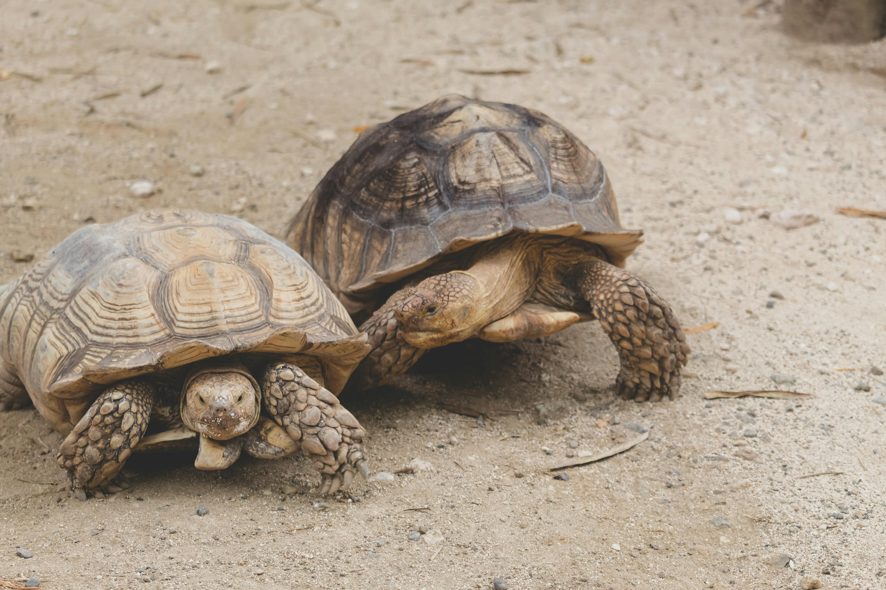
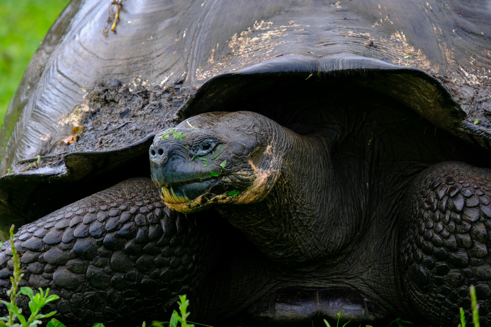

Explore the fascinating world of tortoises, one of the oldest creatures on the Earth.
| Species | Lifespan | Habitat | Diet | Size |
|---|---|---|---|---|
| African Spurred Tortoise | 50-100 years | Sub-Saharan Africa | Herbivores (grasses, fruits) | Up to 2-3 feet |
| Galapagos Tortoise | 100-150 years | Galapagos Islands | Herbivores (cactus, leaves) | Up to 4-5 feet |
| Gopher Tortoise | 40-60 years | Southeastern United States | Herbivores (grass, berries) | Up to 1 foot |